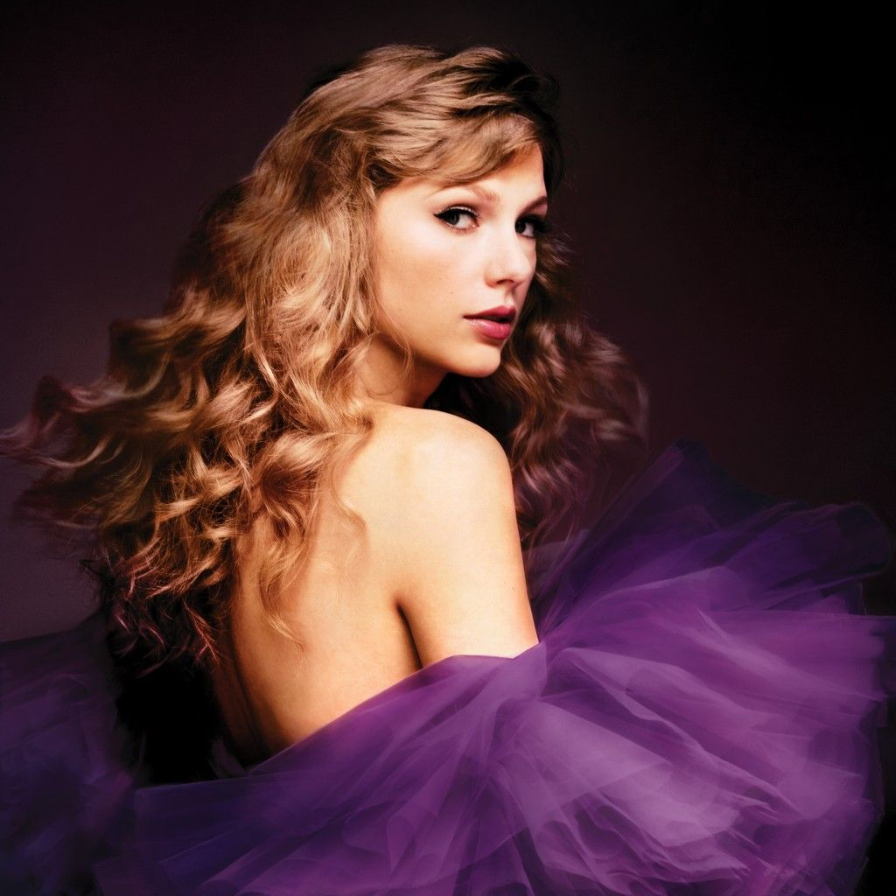

Track 5
As Tracks 5 (quinta música de cada álbum) são conhecidas por serem as músicas mais sentimentais e impactantes de cada álbum da taylor swift.
- Track 5

- Fearless
- Speak Now 
- Red

- 1989

- Reputation

- Lover

- folklore

- evermore

- Midnights

- The Tortured Poets Department

- The Life Of A Showgirl